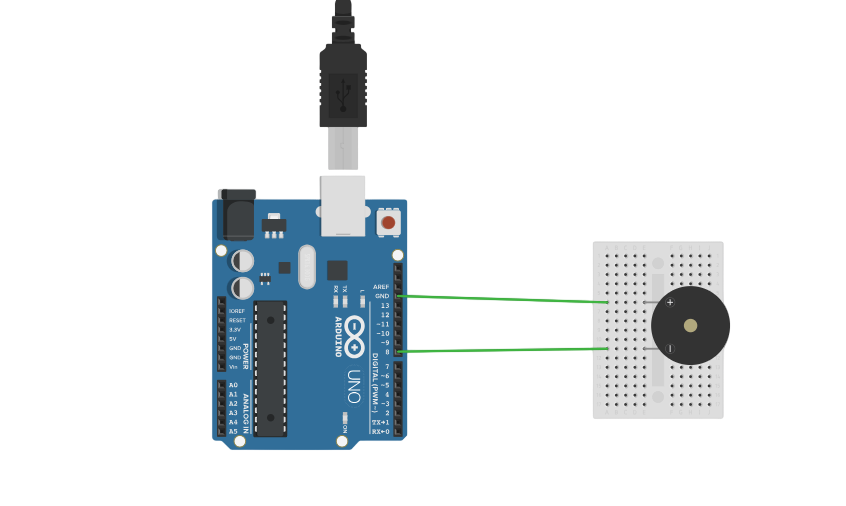

PROJECT 15: MELODY MAKER
Digital Audio Synthesis
Mission Brief
Computers make sound by vibrating a speaker at specific frequencies. In this project, you will use the Arduino `tone()` function to play the classic tune "Mary Had a Little Lamb" through a piezo buzzer.
Key Components
- Arduino Uno R3
- Piezo Buzzer (Passive or Active)
- Jumper Wires
- Breadboard
Circuit Diagram

Pin Connections
| Arduino Pin | Component Connection |
|---|---|
| Pin 8 | Buzzer Positive (+) Leg |
| GND | Buzzer Negative (-) Leg |
Step-by-Step Instructions
- Insert the Piezo Buzzer into the breadboard.
- Connect the **Negative Leg** (usually shorter) to the Arduino **GND** pin.
- Connect the **Positive Leg** (usually longer or marked with a + sticker) to Arduino **Pin 8**.
- Upload the code below.
Arduino Code
/* Project 15 - Mary Had a Little Lamb
* Plays a melody on Pin 8 using note frequencies.
* Original code by Tom Igoe / R. Irons
*/
/*************************************************
* Public Constants (Note Frequencies)
*************************************************/
#define NOTE_B0 31
#define NOTE_C1 33
#define NOTE_CS1 35
#define NOTE_D1 37
#define NOTE_DS1 39
#define NOTE_E1 41
#define NOTE_F1 44
#define NOTE_FS1 46
#define NOTE_G1 49
#define NOTE_GS1 52
#define NOTE_A1 55
#define NOTE_AS1 58
#define NOTE_B1 62
#define NOTE_C2 65
#define NOTE_CS2 69
#define NOTE_D2 73
#define NOTE_DS2 78
#define NOTE_E2 82
#define NOTE_F2 87
#define NOTE_FS2 93
#define NOTE_G2 98
#define NOTE_GS2 104
#define NOTE_A2 110
#define NOTE_AS2 117
#define NOTE_B2 123
#define NOTE_C3 131
#define NOTE_CS3 139
#define NOTE_D3 147
#define NOTE_DS3 156
#define NOTE_E3 165
#define NOTE_F3 175
#define NOTE_FS3 185
#define NOTE_G3 196
#define NOTE_GS3 208
#define NOTE_A3 220
#define NOTE_AS3 233
#define NOTE_B3 247
#define NOTE_C4 262
#define NOTE_CS4 277
#define NOTE_D4 294
#define NOTE_DS4 311
#define NOTE_E4 330
#define NOTE_F4 349
#define NOTE_FS4 370
#define NOTE_G4 392
#define NOTE_GS4 415
#define NOTE_A4 440
#define NOTE_AS4 466
#define NOTE_B4 494
#define NOTE_C5 523
#define NOTE_CS5 554
#define NOTE_D5 587
#define NOTE_DS5 622
#define NOTE_E5 659
#define NOTE_F5 698
#define NOTE_FS5 740
#define NOTE_G5 784
#define NOTE_GS5 831
#define NOTE_A5 880
#define NOTE_AS5 932
#define NOTE_B5 988
#define NOTE_C6 1047
#define NOTE_CS6 1109
#define NOTE_D6 1175
#define NOTE_DS6 1245
#define NOTE_E6 1319
#define NOTE_F6 1397
#define NOTE_FS6 1480
#define NOTE_G6 1568
#define NOTE_GS6 1661
#define NOTE_A6 1760
#define NOTE_AS6 1865
#define NOTE_B6 1976
#define NOTE_C7 2093
#define NOTE_CS7 2217
#define NOTE_D7 2349
#define NOTE_DS7 2489
#define NOTE_E7 2637
#define NOTE_F7 2794
#define NOTE_FS7 2960
#define NOTE_G7 3136
#define NOTE_GS7 3322
#define NOTE_A7 3520
#define NOTE_AS7 3729
#define NOTE_B7 3951
#define NOTE_C8 4186
#define NOTE_CS8 4435
#define NOTE_D8 4699
#define NOTE_DS8 4978
#define PAUSE 0
// Melody Array: The sequence of notes to play
int melody[] = {
NOTE_E4, NOTE_D4, NOTE_C4, NOTE_D4, NOTE_E4, NOTE_E4, NOTE_E4, PAUSE,
NOTE_D4, NOTE_D4, NOTE_D4, PAUSE, NOTE_E4, NOTE_G4, NOTE_G4, PAUSE,
NOTE_E4, NOTE_D4, NOTE_C4, NOTE_D4, NOTE_E4, NOTE_E4, NOTE_E4, PAUSE,
NOTE_E4, NOTE_D4, NOTE_D4, NOTE_E4, NOTE_D4, NOTE_C4
};
// Note Durations: 4 = quarter note, 8 = eighth note, etc.
int noteDurations[] = {
1,4,4,4,4,4,4,8,
4,4,4,8,4,4,4,8,
1,4,4,4,4,4,4,8,
4,4,4,4,4,2
};
void setup() {
// Iterate over the notes of the melody:
for (int thisNote = 0; thisNote < 30; thisNote++) {
// Calculate duration: 1000ms / note type
int noteDuration = 1000 / noteDurations[thisNote];
// Play the note on Pin 8
tone(8, melody[thisNote], noteDuration);
// Set a minimum pause between notes to distinguish them
int pauseBetweenNotes = 400;
delay(pauseBetweenNotes);
// Stop the tone playing
noTone(8);
}
}
void loop() {
// Logic is in setup() to play once.
// Move it here if you want it to repeat forever!
}
How It Works
- Frequency Generation:
-
tone(pin, frequency):
The Arduino sends a square wave signal to the buzzer. For example, `NOTE_A4` is 440Hz, meaning the pin turns High/Low 440 times per second. The buzzer vibrates at this speed, creating the pitch "A". -
Arrays:
We use two arrays: `melody[]` stores the pitch, and `noteDurations[]` stores the timing. The loop reads both arrays simultaneously to play the song. - Code Structure:
-
Definitions:
The long list of `#define` at the top is like a dictionary. It maps human-readable names (like NOTE_C4) to the actual number (262).
Expected Output
As soon as the code uploads, the Arduino will play "Mary Had a Little Lamb" once. To hear it again, simply press the RESET button on the Arduino board.
What You Learned
- How to convert musical notes into digital frequencies.
- Using arrays to store complex sequences of data.
- The difference between `setup()` (run once) and `loop()` (run forever).
Next Steps / Extension Ideas
Try writing your own song! Look up the sheet music for "Star Wars" or "Super Mario", find the matching notes in the list, and create your own `melody[]` array.